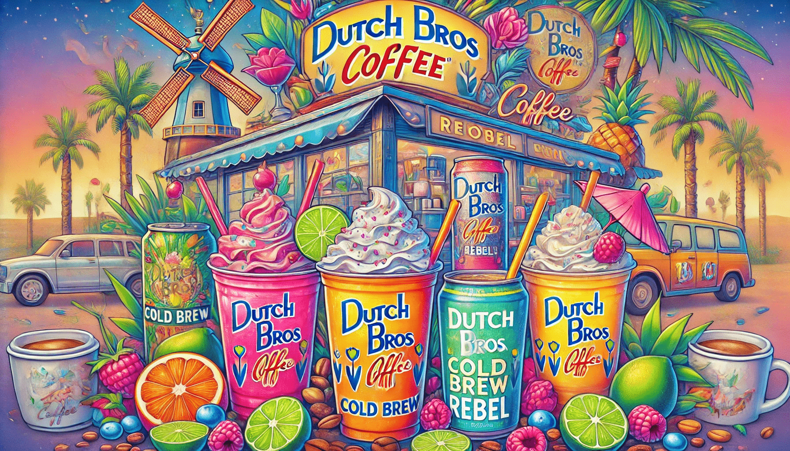

Dutch Bros Menu: Your Guide to Coffee, Energy Drinks, and More!
If you’re a coffee lover or someone who simply enjoys a fun drink with a dash of good vibes, Dutch Bros Coffee has likely crossed your radar. This Oregon-based coffee chain isn’t just about caffeine; it’s about creating an experience. Their vibrant culture, friendly baristas, and of course, their extensive menu make Dutch Bros Menu a favorite stop for coffee enthusiasts. If you’re new to the Dutch Bros universe or just curious about what they have to offer, this article dives deep into their menu, so you’ll know exactly what to order on your next visit.
The Dutch Bros Menu: More Than Just Coffee
Let’s start by saying Dutch Bros isn’t your typical coffee shop. Sure, they have coffee (and lots of it), but their menu extends far beyond the standard latte or cappuccino. From unique energy drinks to teas and smoothies, there’s something for everyone, whether you’re a hardcore caffeine addict or someone who prefers a creamy, blended treat.
The Classics: Coffee at Its Best
- Espresso-Based Drinks:
- Americano: A straightforward option for those who enjoy the bold taste of espresso with a splash of water. Add a flavor shot if you’re feeling adventurous!
- Latte: The perfect mix of espresso and steamed milk. You can customize it with your favorite flavors, like vanilla, caramel, or hazelnut.
- Mocha: Chocolate lovers, rejoice! This rich espresso drink blends chocolate milk with coffee for a dessert-like experience. Try the Caramelizer (mocha with caramel) or the White Chocolate Annihilator for a twist.
- Cold Brew: Dutch Bros offers smooth and refreshing cold brews, perfect for those hot summer days. These can be customized with any flavor, cream, or sweetener to suit your palate.
- Nitro Cold Brew: If you’re looking for a drink with a creamy texture and a serious caffeine kick, the Nitro Cold Brew is your go-to. It’s smooth, rich, and doesn’t need ice, so it’s all flavor, no dilution.
Rebel Energy Drinks: Fuel Your Day
One thing that sets Dutch Bros apart is their Rebel Energy Drinks. These aren’t your typical store-bought energy drinks; they’re customizable and come in countless flavor combinations. Whether you prefer fruity, tangy, or sweet, there’s a Rebel for you.
- Electric Berry: Lime and blue raspberry.
- Shark Attack: Blue raspberry, coconut, lime, and pomegranate drizzle.
- Dragon Slayer: Raspberry, blue raspberry, and blackberry.
Teas and Lemonades
If you’re not in the mood for coffee or energy drinks, Dutch Bros has a variety of teas and lemonades that are perfect for a lighter, refreshing option.
Teas
- Green Tea: A simple, earthy choice that can be paired with any of their syrups for a splash of sweetness.
- Black Tea: Bold and classic, perfect for tea purists or as a base for fruity flavors.
- Paris Tea: A subtly sweet and aromatic tea blend that pairs beautifully with fruit flavors like peach or passionfruit.
Lemonades
Dutch Bros takes their lemonades to the next level with customizable flavors. Try combinations like strawberry-pineapple or mango-peach for a tropical twist.
Frosts and Smoothies: For the Sweet Tooth
Got a craving for something sweet? Dutch Bros offers Frosts (essentially milkshakes) and Smoothies that are guaranteed to hit the spot.
- Birthday Cake: A frost that tastes like a party in your mouth, complete with whipped cream and sprinkles.
- Cotton Candy: Sweet and nostalgic, perfect for kids and adults alike.
- Oreo: Because who doesn’t love cookies and cream?
Smoothies
- Strawberry
- Mango
- Peach
- Wildberry
- Green Apple
Hot Cocoa and Steamers
Dutch Bros doesn’t forget about the non-caffeine drinkers (or the little ones). Their Hot Cocoa is rich, creamy, and perfect for chilly days. Meanwhile, their Steamers are steamed milk flavored with your choice of syrup—ideal for kids or anyone looking for a warm, cozy treat.
Seasonal Specials: Limited-Time Favorites
Dutch Bros loves to keep things exciting with seasonal specials. Whether it’s a Pumpkin Pie Breve in the fall or a Peppermint Bliss Freeze in winter, there’s always something new to try. These drinks are often highly customizable, so don’t be shy about adding your own twist.
Customization: The Dutch Bros Way
One of the best things about Dutch Bros is their dedication to customization. Want your coffee extra sweet? No problem. Prefer oat milk instead of dairy? They’ve got it. Whether it’s sugar-free syrups, alternative milks, or extra espresso shots, Dutch Bros is all about making your drink your way.
The Secret Menu
Want to try something unique? Ask about the secret menu with drinks like:
- White Zombie: White chocolate and vanilla.
- Bob Marley: Banana, coconut, and chocolate.
- Ray of Sunshine: Blackberry, peach, and grapefruit.
Why People Love Dutch Bros
It’s not just the drinks that make dutch bros secret menu it’s the experience. The upbeat atmosphere, friendly baristas, and community-focused vibe are all part of what keeps people coming back. Whether you’re pulling through the drive-thru or hanging out on the patio, you’re guaranteed to leave with a smile.
Wrapping It Up
Dutch Bros is more than just a coffee shop; it’s a destination. With a menu packed full of options ranging from traditional coffee to fun, colorful energy drinks, there’s something for everyone. Whether you’re a coffee purist, a sugar fiend, or someone who just wants a refreshing lemonade, Dutch Bros has you covered.
So, the next time you see that iconic windmill logo, swing by and treat yourself. And don’t forget to ask your barista about their favorite drink—you might just discover your new go-to!